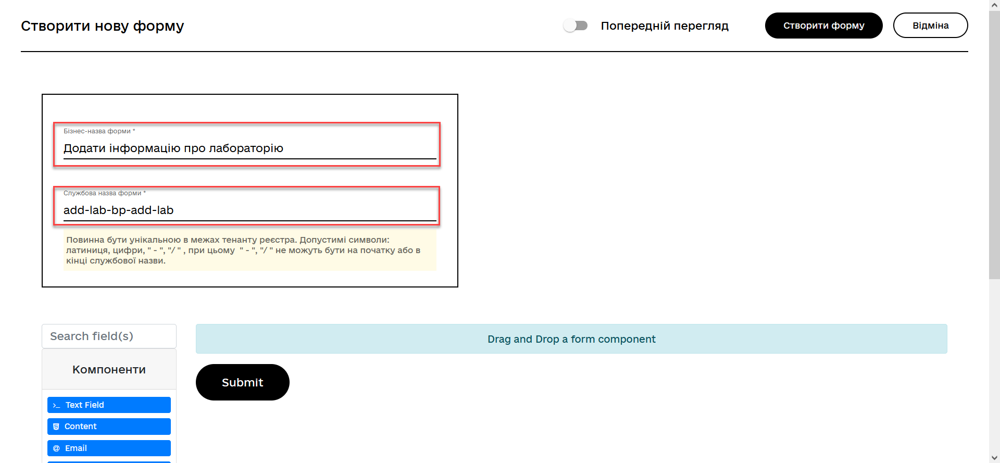
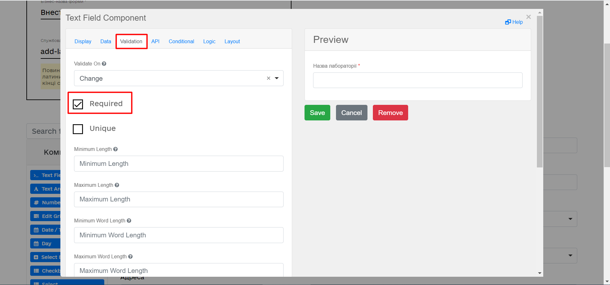
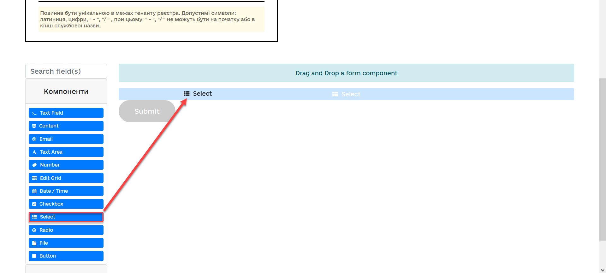
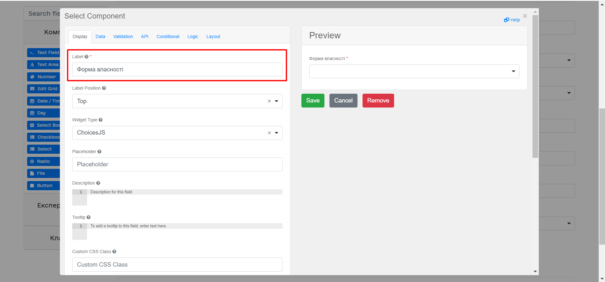
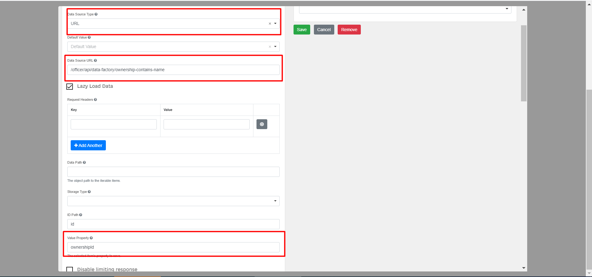
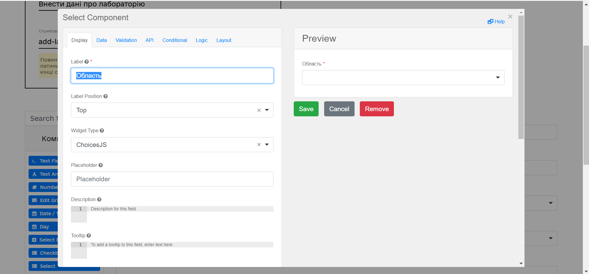
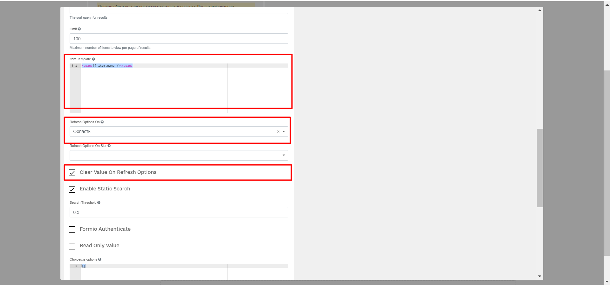
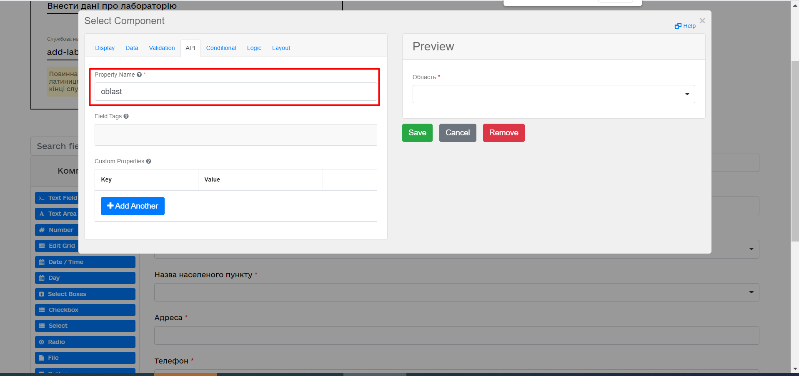
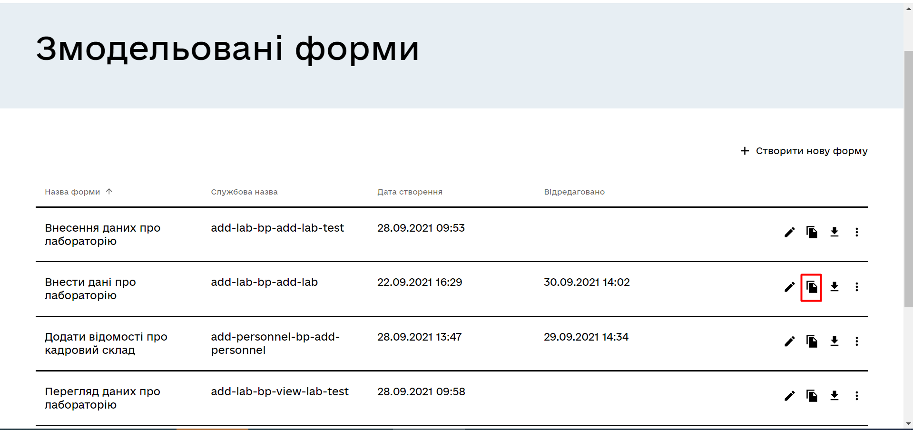

Task 3. Modeling a business process with integration
- 1. Objective of the task
- 2. Prerequisites
- 3. Task execution process
- 3.1. Business process modeling
- 3.1.1. Stages of business process modeling
- 3.1.2. Creating a pool for the business process
- 3.1.3. Creating a start event
- 3.1.4. Creating a user task for entering laboratory data
- 3.1.5. Modeling a service task for creating a business key
- 3.1.6. Creating a service task for searching laboratory data
- 3.1.7. Creating and configuring an XOR gateway
- 3.1.8. Creating a branch with a validation error
- 3.1.9. Configuring the branch with continuing the business process
- 3.1.10. Creating the user task for data signing
- 3.1.11. Creating the script task "Preparing data for record (transient var)"
- 3.1.12. Modeling the service task for data signing with the system key
- 3.1.13. Creating the service task for saving data to the data factory
- 3.1.14. Creating the service task for setting the business process result
- 3.1.15. Creating the business process completion event
- 3.1.16. Saving the modeled business process schema
- 3.2. Form modeling
- 3.3. Modeling access to the business process
- 3.1. Business process modeling
- 4. Uploading regulation files to the remote Gerrit repository
1. Objective of the task
- The execution of this task aims to:
-
-
Teach modeling a business process that involves integration with a data factory.
-
Teach modeling branches within a business process.
-
Teach modeling unified steps in business processes using
Call Activity. -
Teach modeling forms and configuring
Selectcomponents to retrieve data from the data factory.
-
2. Prerequisites
Before proceeding with the task, the following prerequisites must be fulfilled:
-
Ознайомтеся із компонентами FormIO для моделювання форм.
-
Gain a more detailed understanding of business process components through the provided link.
-
Familiarize yourself with the functioning logic of Call Activity through the provided посиланням.
3. Task execution process
3.1. Business process modeling
|
During the business process modeling phase, it is necessary to create and save the corresponding BPMN diagram. Please use the add-lab.bpmn file with the pre-designed business process schema as an example. |
3.1.1. Stages of business process modeling
In the context of this task, the modeler must create a business process consisting of the following stages:
| Important! After completing all stages, remember to save the modeled business process diagram to the appropriate folder in the registry regulations (see Saving the modeled business process schema). |
3.1.2. Creating a pool for the business process
First, model a pool for the business process. Follow the steps below:
| Business process diagram modeling should take place within the Create Pool/Participant element. |
-
Open the Camunda Modeler application and create a new BPMN diagram. To do this, click on the File → New File → BPMN Diagram option in the top left corner:

-
On the toolbar on the left, find the Create Pool/Participant element and drag it to the modeling panel:

-
Fill in the following fields with appropriate values:
-
In the Name field, enter
Lab creation. -
In the Process id field, enter
add-lab. -
In the Process name field, specify
Lab creation.
3.1.3. Creating a start event
Create a start event. Follow the steps below:
-
On the toolbar on the left, find the CreateStartEvent element (a circle) and drag it to the modeling panel:


-
In the settings panel on the right, fill in the following parameters with appropriate values:
-
In the Name field, enter
Start. -
In the Initiator field, enter
initiator.
-
3.1.4. Creating a user task for entering laboratory data
Next, create a user task intended for users to entering data by the user. Follow the steps below:
-
Select the circle with the start event, modeled in the previous stage, and attach a new task by clicking the Append Task icon:
-
Specify the task type by clicking the key icon and choosing User Task from the menu:
-
In the settings panel on the right, click
Open Catalog, select the User Form template from the menu, and clickApplyto confirm:
-
On the settings panel on the right, fill in the following fields:
-
In the Id field, specify
addLabFormActivity. -
In the Name field, enter
Add Laboratory Information. -
In the Form key field, enter
add-lab-bp-add-lab. -
In the Assignee field, specify
${initiator}.
-
3.1.5. Modeling a service task for creating a business key
-
Create a new Service Task:
-
From the extensions catalog (
Open Catalog), select the Define process business key template. -
In the settings panel, define the following fields (task name and script for generating the business key):
-
In the Name field, enter
Set business Key. -
In the Business key field, enter the following script:
${submission('addLabFormActivity').formData.prop('name').value().concat(' ').concat(submission('addLabFormActivity').formData.prop('edrpou').value())}
For more detailed information on configuring business keys, you can follow the link.
Using the business key, users can differentiate one business process from another (or one user task from another) in the list of business tasks in the User portals of the official and service recipient.
-
3.1.6. Creating a service task for searching laboratory data
Next, it is necessary to create a Service Task for searching laboratory data. Follow these steps:
-
Create a new Service Task:
-
From the extensions catalog (
Open Catalog), select the Search for entities in data factory template, and press Apply to confirm. -
On the settings panel on the right, fill in the following fields:
-
In the Id field, enter
searchForLabByNameAndEdrpouActivity. -
In the Name field, it should be specified as
Search for laboratory data (transient var). -
In the Input Parameters section → Resource, specify the following:
-
In the Variable Assignment Type field, select
String or Expression. -
In the Variable Assignment Value field, enter
laboratory-equal-edrpou-name-count.
-
-
In the Input Parameters → Search Variables section, provide the following:
-
In the Variable Assignment type field, select
Map. -
In the Add Entry field, add entries for parameters
nameandedrpou(UA-specific) by clicking the plus (+) sign and specifying their corresponding values:Key Value name${submission('addLabFormActivity').formData.prop('name').value()}edrpou${submission('addLabFormActivity').formData.prop('edrpou').value()}
-
-
In the Input Parameters → X-Access-Token section, specify the following:
-
In the Variable Assignment Type field, select
String or Expression. -
In the Variable Assignment Value field, enter
${completer('addLabFormActivity').accessToken}.After the completion of the first User Task, try using the
completer('<task_id>')function to retrieve user data, instead ofinitiator().The access token is taken from either the initiator (e.g.,
$initiator().accessToken}OR the executor of the last User Task (e.g.,${completer('taskDefinitionId').accessToken}).The JWT token has a validity period of 300 seconds. If the token of the initiator who started the business process is specified, and the user does not perform the task for a long time, the token will expire, and the business process will need to be restarted.
For more details on JUEL functions, you can refer to the JUEL functions: JUEL functions in business processes.
-
-
In the Output Parameters → Result Variable section, fill the
Assign to Process Variableparameter with the valueresponse.
-
3.1.7. Creating and configuring an XOR gateway
Next, it is necessary to attach an XOR gateway. Follow the steps below:
-
Select the rectangle with the service task
Search for laboratory data (transient var)modeled in the previous stage and attach the XOR gateway by clicking the Append Gateway icon. -
In the settings panel on the right, specify the ID and name of the gateway:
-
In the Id field, enter
isLaboratoryExistGateway. -
In the Name field, enter
Are data present?
-
3.1.8. Creating a branch with a validation error
At this stage, it is necessary to create a branch with a validation error. Follow the steps below:
-
Select the rhombus with the XOR gateway "Are data present?" modeled in the previous stage and create a new service task by clicking the Append Task icon.
-
Specify the task type by clicking the key icon and choosing Service Task from the menu.
-
Click
Open Catalog, select the Throw validation error template, and press Apply to confirm.-
In the settings panel on the right, fill in the following fields:
-
у полі Name введіть
Формування валідаційної помилки. -
In the Name field, enter
Generating validation error. -
In the Input Parameters → Validation Errors section, provide the following:
-
In the Variable Assignment Type field, select
List. -
Add the following values for the Value field:
Value 1{"field": "name", "value": "${submission('addLabFormActivity').formData.prop('name').stringValue().replaceAll("\"", "\\\\\"")}", "message": "Data for this laboratory already exists"}Value 2{"field": "edrpou", "value": "${submission('addLabFormActivity').formData.prop('edrpou').value()}", "message": "Data for this laboratory already exists"}
-
-
The Throw validation error delegate has the ability to display multiple messages simultaneously.
In the event of generating this validation error, the user will see two pop-up messages approximately in the following format:
-
name: <entered value for name on the form> "Data for this laboratory already exists".
-
edrpou (UA-specific): <entered value for edrpou on the form> "Data for this laboratory already exists".
-
-
On the branch that goes from the "Are Data Present?" gateway to the user task
Formation of validation error, configure the following parameters:-
In the Id field, enter
isLaboratoryAlreadyExistFlow. -
In the Name field, enter
yes. -
In the Condition Type field, enter
Expression. -
In the Expression field, enter
${!response.value.responseBody.elements().isEmpty()}.
-
3.1.9. Configuring the branch with continuing the business process
On the branch that goes from the Are data present? gateway to the user task Sign laboratory data (see Creating the user task for data signing_ below), configure the following parameters:
-
Leave the Id field with its default value.
-
In the Name field, enter
no. -
In the Condition Type field, select
Expression. -
In the Expression field, enter
${response.value.responseBody.elements().isEmpty()}.
3.1.10. Creating the user task for data signing
Create a User Task for data signing. Follow these steps:
-
Define the task type by clicking the key icon and choosing User Task from the menu.
-
Click
Open Catalog, select the Officer Sign Task template, and press Apply to confirm. -
In the settings panel on the right, fill in the following fields:
-
In the Id field, enter
signLabFormActivity. -
In the Name field, enter
Sign laboratory data. -
In the Form key field, enter
add-lab-sign-lab-data. -
In the Assignee field, enter
${initiator}. -
In the Form data pre-population field, enter
${submission('addLabFormActivity').formData}.
-
3.1.11. Creating the script task "Preparing data for record (transient var)"
Create a new Script Task to prepare data for record. Follow these further configurations:
-
Select the rectangle with the User Task created in the previous step and append a new task by clicking the Append Task icon.
-
Define the task type by clicking the key icon and choosing Script Task from the menu.
-
Select the added Script Task and configure the following parameters:
-
In the Id field, enter
convertSignFormDataToDataFactoryFormatActivity. -
In the Name field, enter
Preparing Data for Record (transient var). -
In the Script Format field, select
groovyas the scripting language. -
In the Script Type field, choose
InlineScript. -
Insert the groovy script directly into the Script field.
Click to expand
def signedFormData = submission('signLabFormActivity').formData signedFormData.prop('oblast', signedFormData.prop('oblast').prop('code').value()) signedFormData.prop('koatuuId', signedFormData.prop('koatuu').prop('koatuuId').value()) signedFormData.deleteProp('koatuu') signedFormData.prop('ownershipId', signedFormData.prop('ownership').prop('ownershipId').value()) signedFormData.deleteProp('ownership') if (signedFormData.hasProp('premisesFile') && !signedFormData.prop('premisesFile').isNull() && !signedFormData.prop('premisesFile').elements().isEmpty()) { signedFormData.prop('premisesFile', signedFormData.prop('premisesFile').elements()[0]) } else { signedFormData.prop('premisesFile', null as String) } if(signedFormData.hasProp('accreditationFile') && !signedFormData.prop('accreditationFile').isNull() && !signedFormData.prop('accreditationFile').elements().isEmpty()) { signedFormData.prop('accreditationFile', signedFormData.prop('accreditationFile').elements()[0]) } else { signedFormData.prop('accreditationFile', null as String) } set_transient_variable('dataPayload', signedFormData)
-
3.1.12. Modeling the service task for data signing with the system key
Create a service task for data signing with the system key and configure the corresponding integration extension. Follow these steps:
-
Select the rectangle with the script task modeled in the previous step and append a new task by clicking the Append Task icon.
-
Define the task type by clicking the key icon and choosing Service Task from the menu.
-
In the settings panel on the right, click
Open Catalogto open the list of available delegate templates. -
From the list received, select the System signature by DSO service template, which should be used for data signing with the system key.
-
In the settings panel on the right, go to the General tab and configure the delegate parameters:
-
In the Name field, enter the task name as
Sign data with system key; -
In the Payload field, pass the data that needs to be signed with the system signature as
${dataPayload}.-
In the X-Access-Token source field, pass the access token of the person currently executing the task with the ID
'signLabFormActivity'as${completer('signLabFormActivity').accessToken}.After the completion of the first User Task, try using the
completer('<task_id>')function to retrieve user data, instead ofinitiator().The access token is taken from either the initiator (e.g.,
$initiator().accessToken) OR the executor of the last User Task (e.g.,${completer('taskDefinitionId').accessToken}).The JWT token has a validity period of 300 seconds. If the token of the initiator who started the business process is specified, and the user does not perform the task for a long time, the token will expire, and the business process will need to be restarted.
For more details on JUEL functions, you can refer to the JUEL functions at JUEL functions in business processes.
-
In the Result variable field, specify the name of the variable to which the digital signature of the specified data will be recorded as
system_signature_ceph_key.
-
-
3.1.13. Creating the service task for saving data to the data factory
At this stage, you need to create and configure a new service task for saving data to the data factory. Follow the steps below:
-
Using the example from Creating a service task for searching laboratory data, create a new service task
Save data to data factoryby clicking the key icon and choosing Service Task from the menu. -
Click
Open Catalog, select the Create entity in data factory template, and press Apply to confirm.
-
In the settings panel on the right, configure the following parameters:
-
In the Id field, enter
sendLabToDataFactoryActivity. -
In the Name field, enter
Save data to data factory. -
In the Resource field, specify
laboratory.In this example, the resource name corresponds to the table name
laboratoryin the database.The Resource field is used to determine the name of the resource (endpoint) in the data factory to which the data will be sent.
Please note that when modeling the business process, you should use resource names with a dash
"-"(instead of an underscore"_") that consist of two or more words.- For example:
-
Resource name in the business process:
laboratory-test
-
In the Payload field, enter
${dataPayload}as the data to be saved; -
In the X-Access-Token field, enter
${completer('signLabFormActivity').accessToken}.After the completion of the first user task, try using the
completer('<task_id>')function to retrieve user data, instead ofinitiator().The access token is taken from either the initiator (e.g.,
$initiator().accessToken)or the executor of the last user task (e.g.,${completer('taskDefinitionId').accessToken}).The JWT token has a validity period of 300 seconds. If the token of the initiator who started the business process is specified, and the user does not perform the task for a long time, the token will expire, and the business process will need to be restarted.
For more details on JUEL functions, you can refer to JUEL functions in business processes.
-
In the X-Digital-Signature source field, enter
${sign_submission('signLabFormActivity').signatureDocumentId}. -
In the X-Digital-Signature-Derived source field, enter
${system_signature_ceph_key}. -
In the Result Variable field, specify
response, the variable to which the server’s response will be recorded, if applicable.
-
3.1.14. Creating the service task for setting the business process result
At this stage, you need to create and configure a service task that will set the result of the business process.
-
Using the example from Creating the service task for saving data to the data factory, model a new service task
Execution result: Laboratory createdby clicking the key icon and choosing Service Task from the menu. -
Click Open Catalog, select the Define business process status template, and press Apply to confirm.
-
In the settings panel on the right, configure the following parameters:
-
In the Name field, enter
Execution result: Laboratory created. -
In the Status field, enter
Laboratory created!.
-
|
The Name field has an informative value. "Execution result: Laboratory created!" will be displayed on the portal in the Status of the completed business process field, informing us about the completion of a certain business process.
|

3.1.15. Creating the business process completion event
At this stage, you need to create an event that will mark the completion of the main business process.
-
Using the example from [create-end-event-call-activity] (external subprocess Call Activity), attach and configure the event for completing the business process.
-
In the settings panel on the right, for the
Nameparameter, enterLaboratory created.
| As a result, you will have a complex business process modeled with the configuration and invocation of an external subprocess Call Activity. |
3.1.16. Saving the modeled business process schema
After completing the modeling process, save the obtained business process schema with the name add-lab.bpmn to the bpmn folder in the Gerrit repository. To do this, in the top-left corner, open the File menu, select Save File As..., and enter the corresponding name and path.
3.2. Form modeling
|
During the form modeling stage, you need to create and link JSON forms to the previously modeled tasks within the business process. Forms are linked to business processes by the service name. Use the files add-lab-bp-add-lab.json and add-lab-sign-lab-data.json with the modeled forms as examples. |
3.2.1. Creating the data entry form
First, create a form for data entry by the user. Follow these steps:
-
Access the Regulations administrator portal.

-
Create a new candidate version for Task 3:


-
Go to the UI forms section. To create a new form for the business process, click the
Create new formbutton:
-
In the new window, in the Business form name field, enter the name corresponding to the modeled user task —
Add laboratory information. -
Fill in the Form name field with the value
add-lab-bp-add-lab(must match the value in the Form key field of the same user task).
-
-
Go to the Constructor tab.
-
From the components panel on the left, drag the Text Field component to the modeling panel and perform further settings:
-
In the new window, go to the Display tab and fill in the Label field with
Laboratory name:
-
Go to the Validation tab and set the
Requiredparameter totrue:
-
Go to the API tab and fill in the Property Name field with
name.The Property Name field value must be unique.
-
Click the
Savebutton to save the changes:
Similarly, model text fields (Text Field) for
EDRPOU or RNOKPP Code(UA-specific),Address,Phone, andManager.
-
-
From the components panel on the left, drag the Checkbox component to the modeling panel and perform further settings:
-
Go to the Display tab and fill in the Label field with
Accreditation available: -
Go to the API tab and fill in the Property Name field with
accreditationFlag. -
Click the
Savebutton to save the changes:
-
-
From the components panel on the left, drag the File component to the modeling panel and perform further settings:

-
Go to the Display tab and fill in the Label field with
Premises documents:
-
Go to the File tab and fill in the following fields:
-
In the Storage field, specify
Url. -
In the Url field, specify
/documents. -
In the File Pattern field, specify
application/pdf,image/jpeg,image/png. -
In the File Minimum size field, specify
0KB. -
In the File Maximum size field, specify
50MB.
-
-
Go to the Data tab and leave the Multiple Values field empty, i.e., with the value
False:
-
Go to the API tab and fill in the Property Name field with
premisesFile. -
Click the
Savebutton to save the changes:
-
-
From the components panel on the left, drag the Select component to the modeling panel and perform further settings to obtain information from the directory:

-
Go to the Display tab and fill in the Label field with
Ownership form:
-
Go to the Data tab and fill in the following fields:
-
In the Data Source Type field, specify
URL. -
In the Data Source URL field, specify
/officer/api/data-factory/ownership-contains-name, where:де:
-
/officerindicates that the request to the directory will be executed from the Officer portal. -
/api/data-factory/indicates the path to the data factory. -
ownership-contains-nameis the name of the search condition to obtain data from the ownership directory that was modeled and added to the repository.
-
-
-
-
In the Value Property field, specify
ownershipId.
-
In the Item Template field, specify
<span>{{ item.name }}</span>,where
nameis the name of the parameter that returns the search condition and will be displayed on the form.
-
Go to the Validation tab and set the
Requiredparameter totrue. -
Go to the API tab and fill in the Property Name field with
ownership:
-
Click the
Savebutton to save the changes.
-
-
By analogy, perform the settings to obtain information from the Region directory. From the components panel on the left, drag the Select component to the modeling panel.
-
Go to the Display tab and fill in the Label field with the value
Region:
-
Go to the Data tab and fill in the following fields:
-
у полі
Data Source Typeвкажіть значеннÑURL; -
у полі
Data Source URLвкажіть/officer/api/data-factory/koatuu-obl-contains-name, -
In the Data Source Type field, specify the value
URL. -
In the Data Source URL field, enter
/officer/api/data-factory/koatuu-obl-contains-name,
where:
-
/officer indicatesthat the query to the directory will be executed from the Officer portal; -
/api/data-factory/indicates the path to the data factory; -
koatuu-obl-contains-nameis the search condition to obtain data from the directory of regions that was modeled and added to the repository.
-
In the Value Property field, enter the value
code.
-
у полі
Item Templateвкажіть<span>{{ item.name }}</span>, -
In the Item Template field, enter
<span>{{ item.name }}</span>,where
nameis the parameter name that returns the search condition and will be displayed on the form. -
In the Refresh Options On field, specify (the current value will be removed when the value in the Region field changes);
-
Set the flag to
Truefor theClear Value On Refresh Optionsparameter.
-
-
Go to the Validation tab and set the flag for the
Requiredparameter toTrue. -
Go to the API tab and fill in the Property Name field with the value
region:

-
Click the
Savebutton to save the changes.
-
-
Configure the dependent component Select. Drag the Select component from the component panel on the left to the modeling panel and perform further settings to obtain information from the directory:
-
Go to the Display tab and fill in the Label field with the value
Settlement name:
-
Go to the Data tab and fill in the following fields:
-
In the Data Source Type field, enter
URL. -
In the Data Source URL field, enter
/officer/api/data-factory/koatuu-np-starts-with-name-by-obl,where:
-
/officerindicates that the query to the directory will be executed from the Officer portal; -
/api/data-factory/indicates the path to the data factory; -
koatuu-np-starts-with-name-by-oblis the search condition to obtain data from the directory of settlements that was modeled and added to the repository.
-
-
In the Value Property field, enter
koatuuId.
-
In the
Filter Queryfield, enterlevel1={{data.oblast.code}},where:
-
level1is the input parameter for the endpointkoatuu-np-starts-with-name-by-obl; -
{{data.oblast.code}}is the path to obtain data fromdata.Property name.Value Propertyfrom the previous Select component.
-
-
In the Item Template field, enter
<span>{{ item.name }}</span>,where
nameis the parameter name that returns the search condition and will be displayed on the form. -
In the Refresh Options On field, enter
Region(the current value will be removed when the value in the Region field changes); -
Set the flag for the
Clear Value On Refresh Optionsparameter toTrue.
-
-
Go to the Validation tab and set the flag for the
Requiredparameter toTrue. -
Go to the API tab and fill in the Property Name field with the value
koatsu(UA-specific). -
Click the
Savebutton to save the changes.
-
-
Save the form by clicking the
Create formbutton in the upper right corner:
3.2.2. Creating a form for data signature
After completing the previous stage of creating a form for data entry, create another form for data signature.
To do this, copy the previously modeled form by clicking the copy icon — this will allow you to create a form from a ready-made template.

Configure the form parameters:
-
Enter the name of the corresponding user task
Sign laboratory datain the Business form name field; -
Fill in the Form name field with the value
add-lab-sign-lab-data(corresponding to the Form key field value of the same user task); -
In all components:
-
On the Display tab, set the flag for the
Disabledparameter. -
Click the
Savebutton to save the changes.
-
-
Save the form by clicking the
Save changesbutton in the upper right corner.
3.2.3. Uploading modeled forms of the business process to the local directory
Upload the forms by clicking the upload icon and place them in the regulatory folder forms of the project in the local Gerrit repository.
3.3. Modeling access to the business process
|
At this stage, it is necessary to provide access to the business process in the Officer portal for the standard Access parameters are configured in the configuration file named officer.yml in the bp-auth directory. |
Edit the file bp-auth/officer.yml by adding the following parameters:
authorization:
realm: 'officer'
process_definitions:
- process_definition_id: 'add-lab-test'
process_name: 'Laboratory creation'
process_description: 'Regulation for creating laboratories'
roles:
- officer
- process_definition_id: 'add-lab'
process_name: 'Laboratory creation'
process_description: 'Regulation for creating laboratories'
roles:
- officerSaving the access configuration file
Save the officer.yml file to the regulatory folder bp-auth of the project in the local Gerrit repository.
4. Uploading regulation files to the remote Gerrit repository
For successful deployment of the business process, forms, and applying the correct access settings to the business process in the target environment, the regulation administrator needs to upload the saved local regulation files to the remote Gerrit code repository.
To do this, follow the steps: Deploying registry regulations in Gerrit.